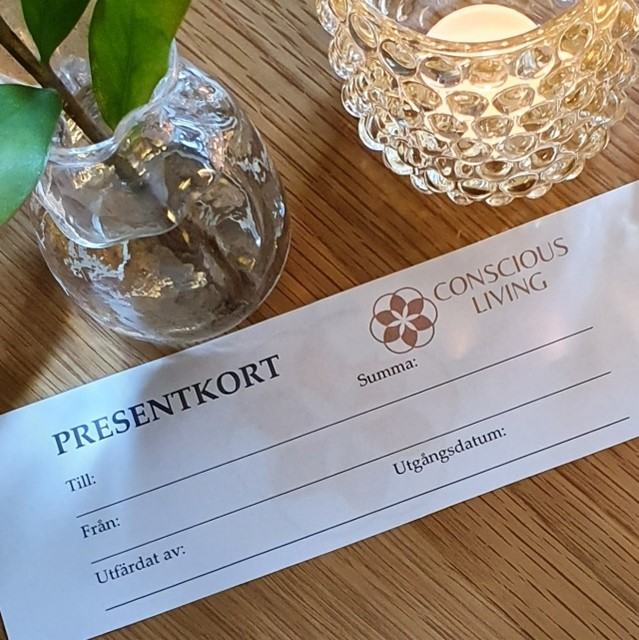

<section class="about">
    <div class="container">
        <div class="content">
            

        <h1>PRESENTKORT</h1>
        <h2>Ge en gåva till en vän</h2>

        <div class="andlig">   
           <div class="text1">  
            
            </div>

            <div class="text2"> 
                <p> 
                Vill du ge en gåva till någon? Då har du möjlighet att köpa ett presentkort.<br><br>
                Detta ställer ofta till med problem för oss senare i livet i form av överdriven självkritik, skam, skuld och kronisk inre stress. Det kan ge en självbild där vi kräver av oss själva att vi ständigt ska vara exempelvis duktiga…eller till och med bäst, framgångsrika, prestera resultat, snälla och roliga. Vi klankar ner på oss själva och försöker pressa oss att orka mer än vi klarar av. Eller alltid ställa upp för andra för att kunna känna oss som värdefulla människor. 
                <br><br>
                Antingen köper du en specifik tjänst/produkt eller så väljer du en summa som mottagaren får nyttja som den vill.<br><br>
                Presentkortet kan skickas per post om du önskar – till dig eller till mottagaren.
                <br><br>
                Du kan köpa på plats hos mig alternativt beställa när nedan.
                </p>
            </div>
        </div>    
        </div>
    </div>    
</section>